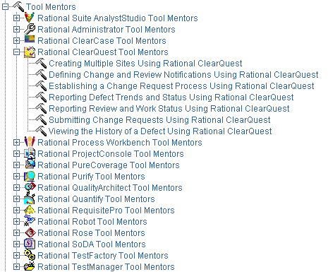

Key Concept: Tool Mentor
Activities, steps, and associated guidelines provide general guidance to the
practitioner. To go one step further, tool mentors are an additional
means of providing guidance by showing how to perform the steps using a specific
software tool. Tool mentors are provided in the RUP,
linking its activities with tools such as Rational Rose, Rational RequisitePro,
Rational ClearCase, Rational ClearQuest, Rational Suite TestStudio. The tool mentors almost completely
encapsulate the dependencies of the process on the tool set, keeping the
activities free from tool details. An organization can extend the concept of
tool mentor to provide guidance for other tools.

An example of Tool mentors and their organization
in the treebrowser
Copyright
© 1987 - 2001 Rational Software Corporation
| |

|
 Overview >
Overview >
 Key Concepts >
Key Concepts >